New MiniMax H3 sounds for the Warden's shot and bolt, the dry-fire click, the concrete, gravel and wood steps and
the landing (the grass steps stay as they were). For each sound: what is in the game now, the old placeholder to
compare, then every candidate ranked by the listening metrics (loudness, attack, length, spectrum, noise, no
voice or music). The picks were chosen by those numbers alone, so trust your ears over them: press use this
on the ones you prefer (several per sound is fine), then Copy overrides and paste the list in the chat.
Warden (sniper) shot
The three variations come from one prompt so they sound alike.
In the game nowgame/assets/audio/weapons/warden_shot_<n>.ogg · volume 0.72
warden_shot_1.ogg
waveform
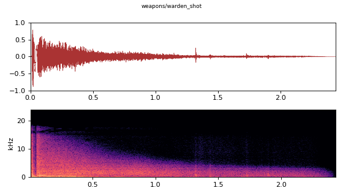
warden_shot_2.ogg
waveform
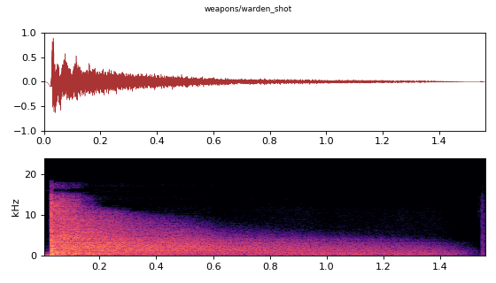
warden_shot_3.ogg
waveform
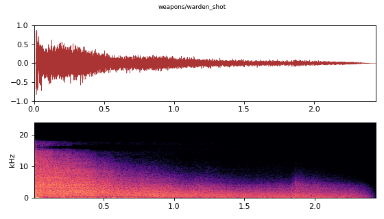
old placeholder: warden_shot_1.ogg
old placeholder: warden_shot_2.ogg
old placeholder: warden_shot_3.ogg
#1 warden_shot_crack_1 · round 2picked
huge sniper shot: supersonic crack + deep boom, echo over hills
score 89.9 · 2.44 s · loud -24.6 dB · attack 7.0 ms · centroid 1196 Hz · low 12 % · SNR 58.3 dB
waveform
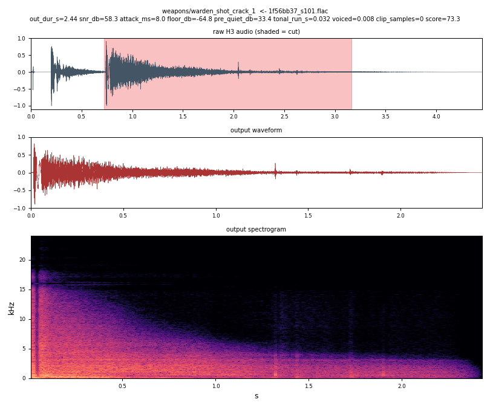
#2 warden_shot_punch_2 · round 2
very loud punchy shot at the muzzle brake, short echo
score 88.0 · 2.04 s · loud -22.1 dB · attack 8.0 ms · centroid 1408 Hz · low 0 % · SNR 56.1 dB
waveform
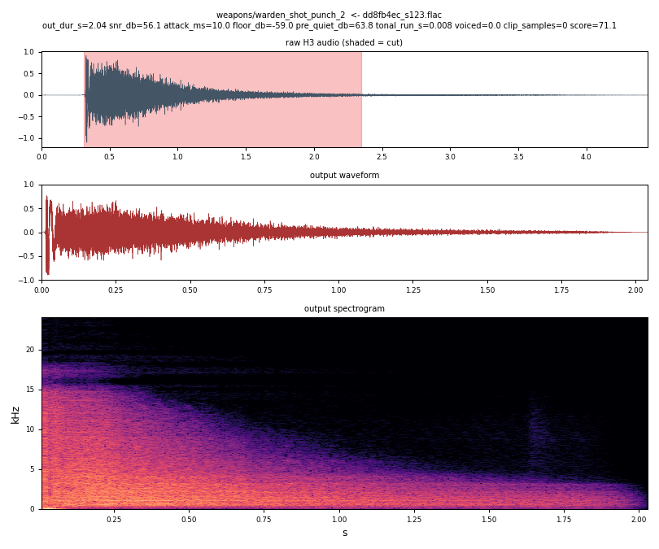
#3 warden_shot_valley_3 · round 2
.50 rifle in a mountain valley, thunderous echo
score 81.9 · 1.559 s · loud -23.1 dB · attack 11.5 ms · centroid 1749 Hz · low 9 % · SNR 44.5 dB
waveform
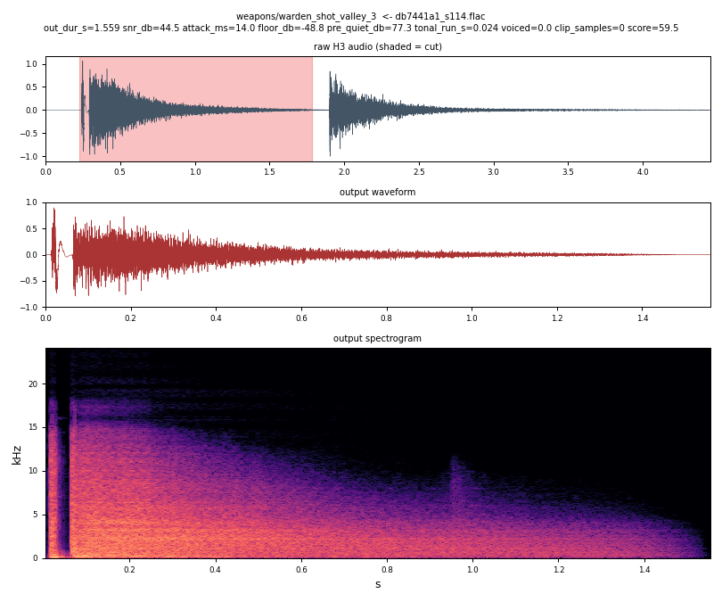
#4 warden_shot_valley_1 · round 2
.50 rifle in a mountain valley, thunderous echo
score 81.6 · 1.444 s · loud -23.1 dB · attack 11.5 ms · centroid 1777 Hz · low 4 % · SNR 50.6 dB
waveform
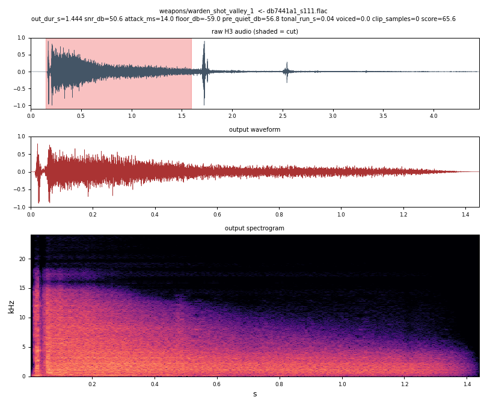
#5 warden_shot_punch_3 · round 2
very loud punchy shot at the muzzle brake, short echo
score 81.0 · 1.064 s · loud -22.7 dB · attack 8.5 ms · centroid 1545 Hz · low 2 % · SNR 54.7 dB
waveform
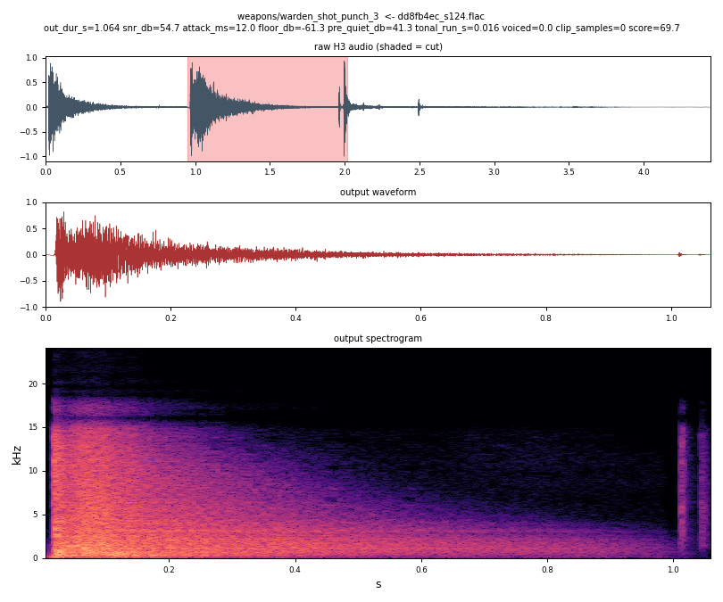
#6 warden_shot_crack_2 · round 2picked
huge sniper shot: supersonic crack + deep boom, echo over hills
score 80.4 · 1.564 s · loud -26.3 dB · attack 6.5 ms · centroid 1654 Hz · low 4 % · SNR 46.5 dB
waveform
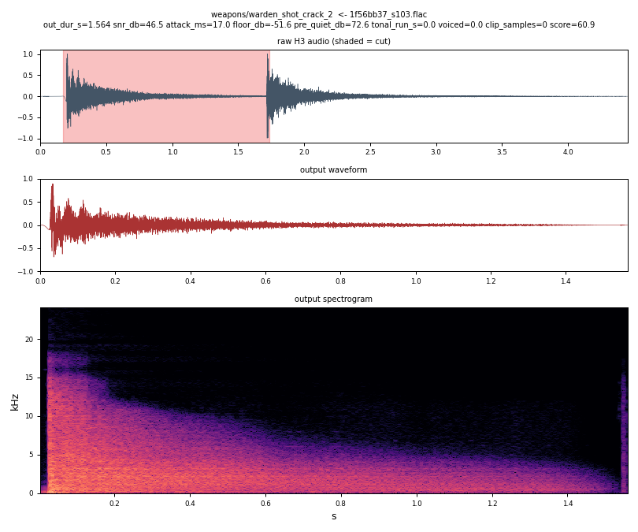
#7 warden_shot_2 · round 1 (h3_test)
round 1 prompt (tools/comfy_audio.py preset)
score 77.0 · 2.64 s · loud -25.7 dB · attack 3.0 ms · centroid 1502 Hz · low 1 % · SNR 43.6 dB
waveform
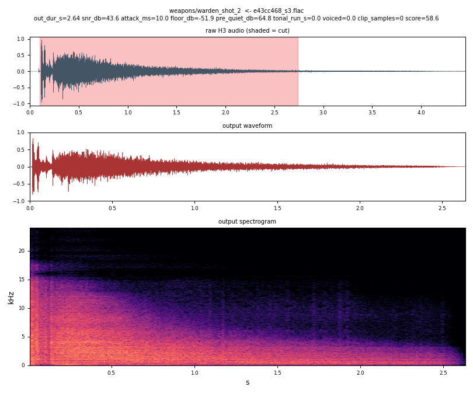
#8 warden_shot_1 · round 1 (h3_test)
round 1 prompt (tools/comfy_audio.py preset)
score 76.7 · 2.64 s · loud -27.6 dB · attack 7.0 ms · centroid 1196 Hz · low 2 % · SNR 43.8 dB
waveform
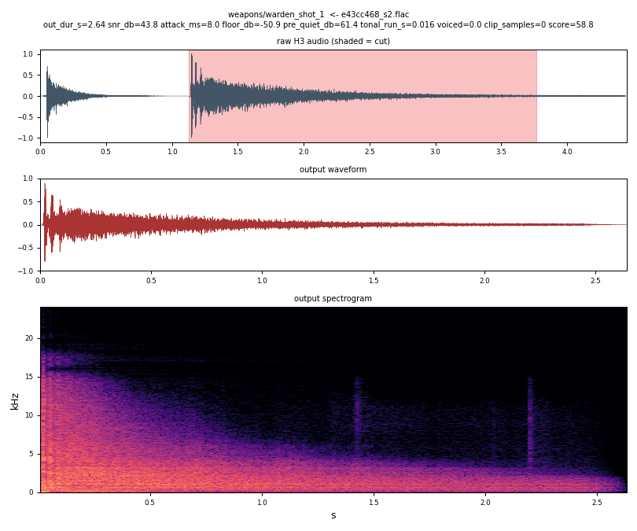
#9 warden_shot_crack_4 · round 2picked
huge sniper shot: supersonic crack + deep boom, echo over hills
score 76.5 · 2.44 s · loud -24.6 dB · attack 5.0 ms · centroid 1193 Hz · low 8 % · SNR 42.2 dB
waveform
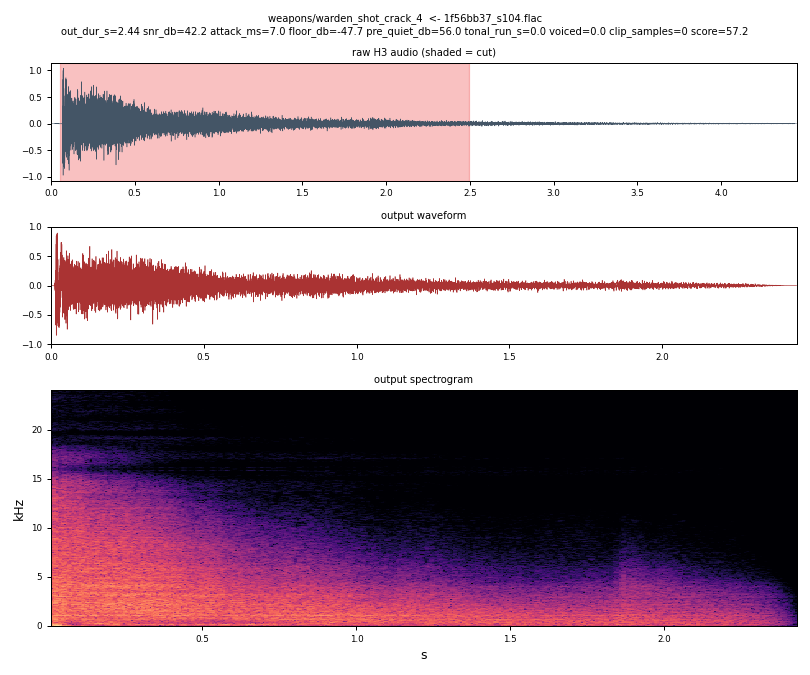
#10 warden_shot_3 · round 1 (h3_test)
round 1 prompt (tools/comfy_audio.py preset)
score 71.3 · 2.64 s · loud -25.6 dB · attack 15.0 ms · centroid 1233 Hz · low 1 % · SNR 40.0 dB
waveform
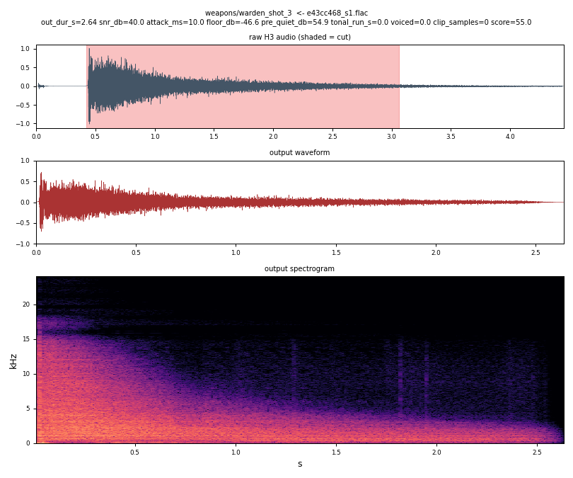
#11 warden_shot_valley_4 · round 2
.50 rifle in a mountain valley, thunderous echo
score 71.2 · 1.725 s · loud -24.8 dB · attack 9.0 ms · centroid 1304 Hz · low 5 % · SNR 41.4 dB
waveform
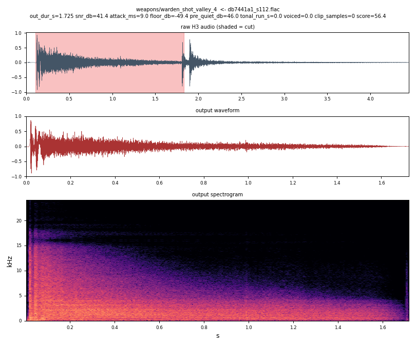
#12 warden_shot_punch_1 · round 2too short for a sniper shot
very loud punchy shot at the muzzle brake, short echo
score 75.0 · 0.521 s · loud -23.6 dB · attack 7.5 ms · centroid 2165 Hz · low 0 % · SNR 61.8 dB
waveform
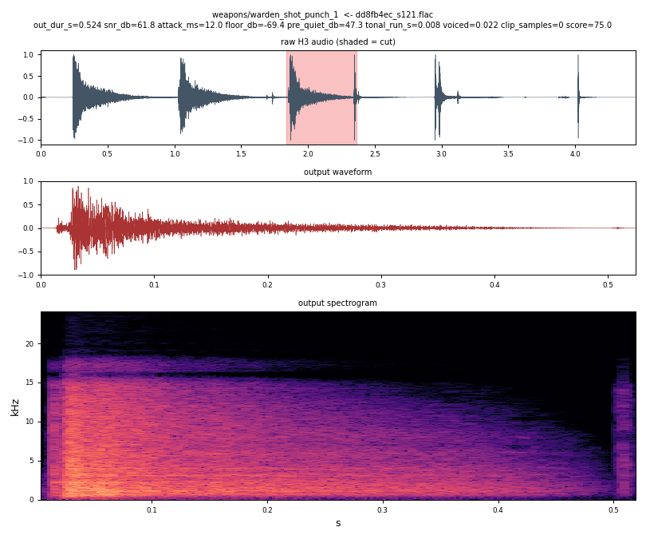
#13 warden_shot_punch_4 · round 2too short for a sniper shot
very loud punchy shot at the muzzle brake, short echo
score 64.6 · 0.397 s · loud -21.4 dB · attack 28.5 ms · centroid 2425 Hz · low 4 % · SNR 53.8 dB
waveform
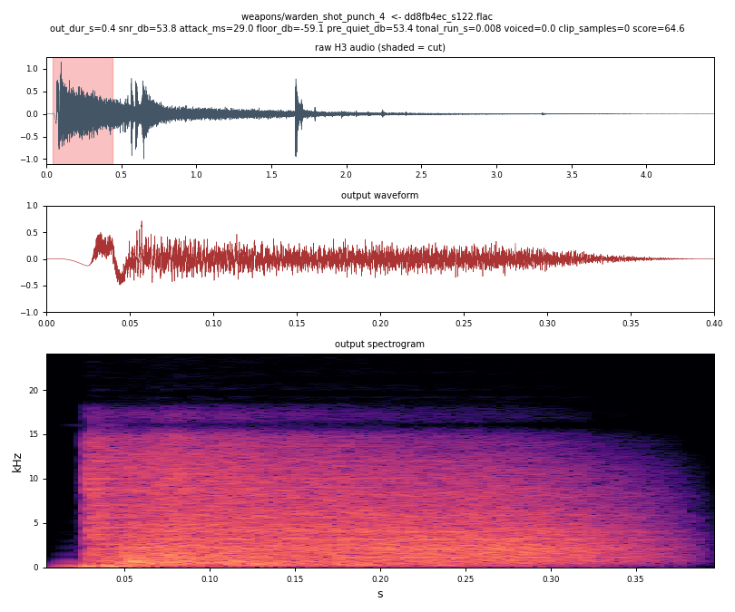
#14 warden_shot_valley_2 · round 2soft attack
.50 rifle in a mountain valley, thunderous echo
score 63.3 · 1.952 s · loud -24.0 dB · attack 24.0 ms · centroid 1339 Hz · low 16 % · SNR 51.6 dB
waveform
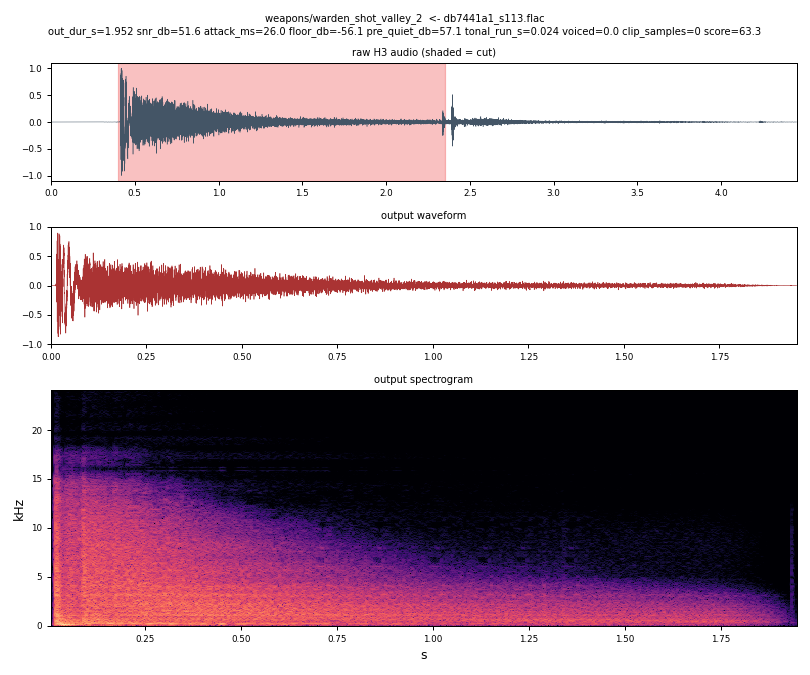
#15 warden_shot_crack_3 · round 2too short for a sniper shot
huge sniper shot: supersonic crack + deep boom, echo over hills
score 57.6 · 0.986 s · loud -24.4 dB · attack 11.5 ms · centroid 1757 Hz · low 8 % · SNR 42.6 dB
waveform
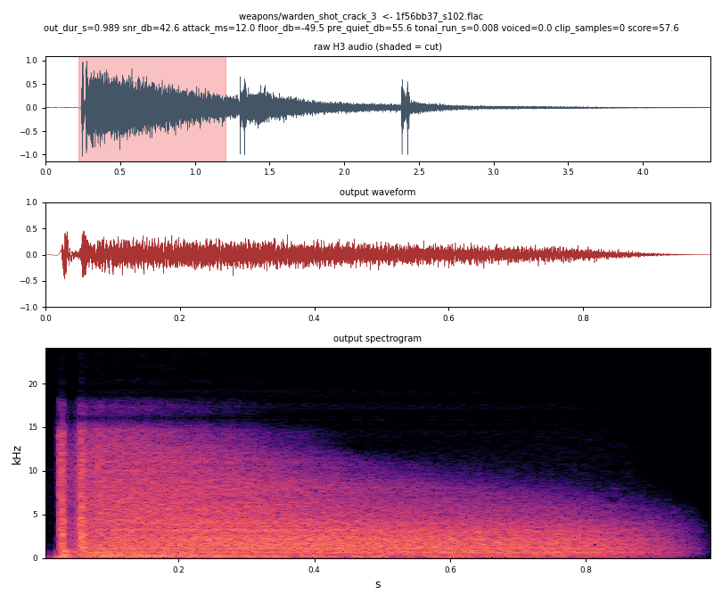
Warden bolt cycle
Every candidate is a whole working of the bolt (lift, back, forward, lock) cut from a raw H3 clip and re-timed by lengthening or shortening the quiet gaps between the clicks (no stretching, so the pitch is kept): each is exactly 0.90 s with its lock click 0.07 s before the end, so with the 0.35 s delay after the shot it ends on the 1.25 s bolt cycle, as the Warden can fire again. 'edit' is how much the gaps were changed.
In the game nowgame/assets/audio/weapons/bolt_cycle_<n>.ogg · volume 0.75
bolt_cycle_1.ogg
waveform
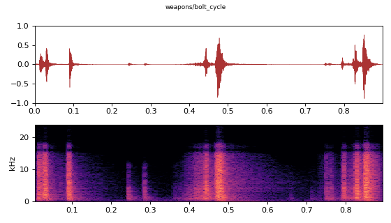
bolt_cycle_2.ogg
waveform
old placeholder: bolt_cycle.ogg
#1 bolt_cycle_heavy · bolt_fit_01picked
heavy steel bolt racked fast: click, clack, clack, lock
score 57.1 · 4 clicks · edit -0.12 s · lock click 0.0 dB · SNR 64.6 dB · loud -23.8 dB · attack 5.5 ms · centroid 4872 Hz · low 0 %
waveform
#2 bolt_cycle_four · bolt_fit_02picked
bolt cycled in one second: lift click, back clack, forward clack, lock click
score 53.2 · 4 clicks · edit +0.27 s · lock click 0.0 dB · SNR 84.5 dB · loud -23.1 dB · attack 4.0 ms · centroid 4632 Hz · low 0 %
waveform
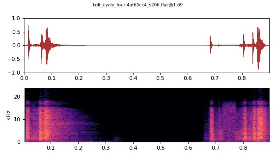
#3 bolt_cycle_heavy · bolt_fit_03
heavy steel bolt racked fast: click, clack, clack, lock
score 53.0 · 3 clicks · edit +0.05 s · lock click 0.0 dB · SNR 58.3 dB · loud -20.4 dB · attack 9.5 ms · centroid 4935 Hz · low 0 %
waveform
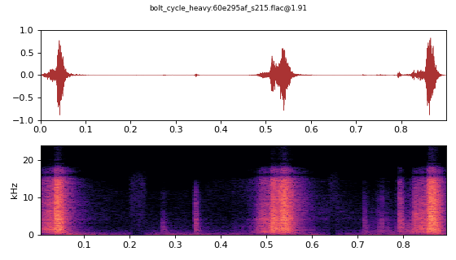
#4 bolt_cycle_four · bolt_fit_04
bolt cycled in one second: lift click, back clack, forward clack, lock click
score 50.0 · 4 clicks · edit +0.01 s · lock click -9.8 dB · SNR 66.4 dB · loud -23.2 dB · attack 91.0 ms · centroid 5301 Hz · low 0 %
waveform
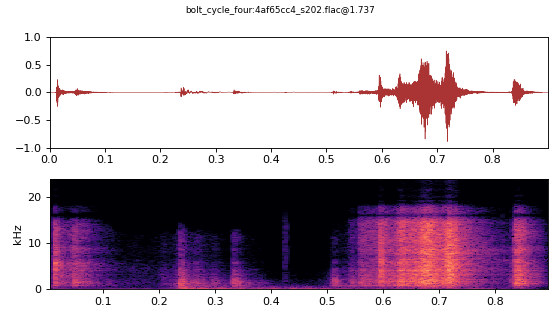
#5 bolt_cycle_heavy · bolt_fit_05
heavy steel bolt racked fast: click, clack, clack, lock
score 49.9 · 6 clicks · edit +0.08 s · lock click 0.0 dB · SNR 59.9 dB · loud -22.8 dB · attack 6.0 ms · centroid 5527 Hz · low 0 %
waveform
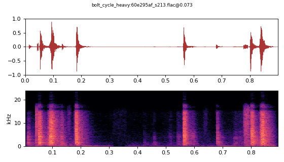
#6 bolt_cycle_four · bolt_fit_06
bolt cycled in one second: lift click, back clack, forward clack, lock click
score 48.6 · 4 clicks · edit +0.40 s · lock click -1.3 dB · SNR 61.5 dB · loud -21.1 dB · attack 18.0 ms · centroid 3161 Hz · low 0 %
waveform
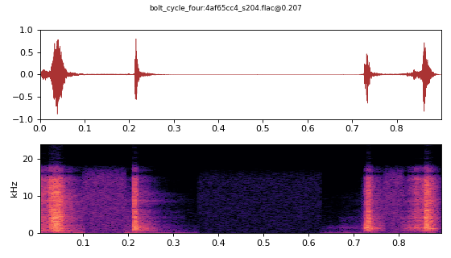
#7 bolt_cycle_heavy · bolt_fit_07
heavy steel bolt racked fast: click, clack, clack, lock
score 48.6 · 6 clicks · edit -0.11 s · lock click -0.6 dB · SNR 60.5 dB · loud -21.7 dB · attack 14.0 ms · centroid 5263 Hz · low 0 %
waveform
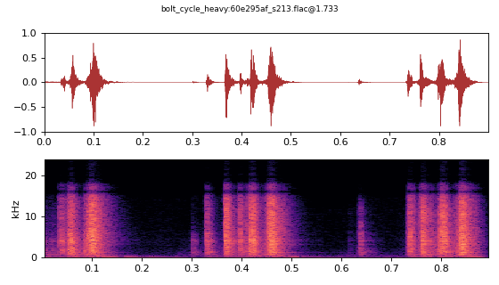
#8 bolt_cycle_four · bolt_fit_08
bolt cycled in one second: lift click, back clack, forward clack, lock click
score 48.4 · 4 clicks · edit +0.46 s · lock click 0.0 dB · SNR 83.0 dB · loud -20.8 dB · attack 51.5 ms · centroid 4603 Hz · low 0 %
waveform
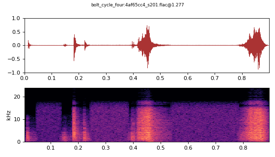
#9 bolt_cycle_four · bolt_fit_09
bolt cycled in one second: lift click, back clack, forward clack, lock click
score 47.9 · 3 clicks · edit +0.28 s · lock click -1.1 dB · SNR 86.2 dB · loud -22.4 dB · attack 5.5 ms · centroid 4497 Hz · low 0 %
waveform
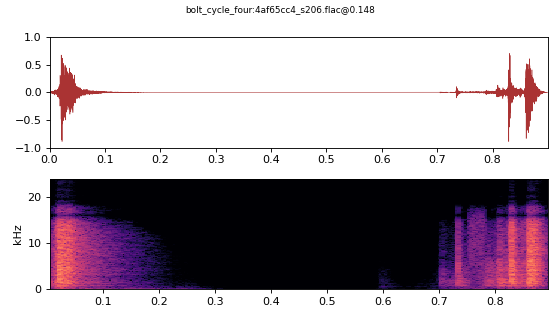
#10 bolt_cycle_heavy · bolt_fit_10
heavy steel bolt racked fast: click, clack, clack, lock
score 44.8 · 3 clicks · edit +0.44 s · lock click -0.1 dB · SNR 64.6 dB · loud -21.4 dB · attack 18.5 ms · centroid 5157 Hz · low 0 %
waveform
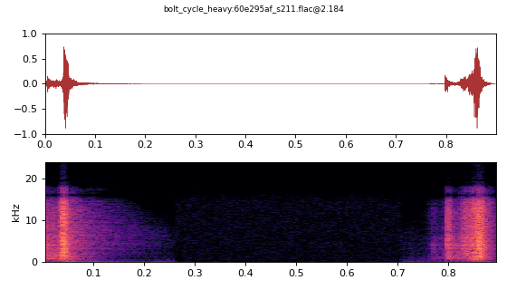
#11 bolt_cycle · bolt_fit_11
round 1 prompt (tools/comfy_audio.py preset)
score 44.7 · 3 clicks · edit +0.45 s · lock click 0.0 dB · SNR 72.8 dB · loud -23.6 dB · attack 10.0 ms · centroid 2518 Hz · low 0 %
waveform
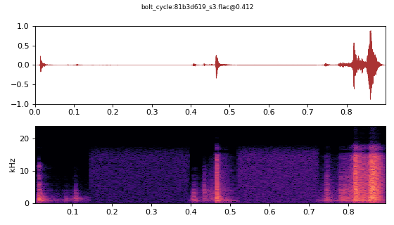
#12 bolt_cycle · bolt_fit_12
round 1 prompt (tools/comfy_audio.py preset)
score 43.9 · 3 clicks · edit +0.48 s · lock click 0.0 dB · SNR 72.1 dB · loud -21.6 dB · attack 35.0 ms · centroid 4166 Hz · low 0 %
waveform
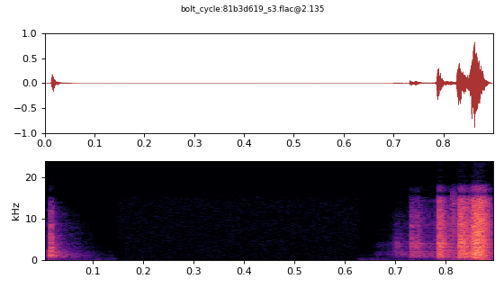
#13 bolt_cycle · bolt_fit_13
round 1 prompt (tools/comfy_audio.py preset)
score 43.1 · 3 clicks · edit +0.52 s · lock click 0.0 dB · SNR 62.8 dB · loud -22.4 dB · attack 18.0 ms · centroid 2233 Hz · low 0 %
waveform
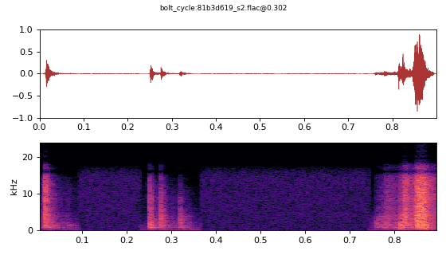
Dry-fire click (empty gun)
The shipped clicks are the picks made louder and denser (low end off, gently saturated, peak at -1 dBFS) and cut to 0.15 s. In game they play at volume 0.6: about 14 dB over the old placeholder.
In the game nowgame/assets/audio/weapons/dry_fire_<n>.ogg · volume 0.6
dry_fire_1.ogg
waveform
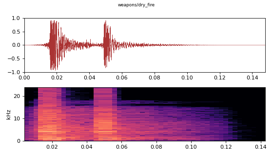
dry_fire_2.ogg
waveform
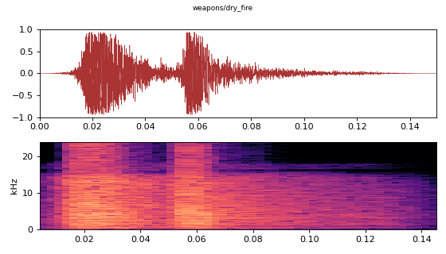
old placeholder: dry_fire.ogg
#1 dry_fire_snap_2 · round 2picked
hammer snapping on an empty chamber, loud sharp crisp click
score 72.5 · 0.148 s · loud -26.2 dB · attack 4.0 ms · centroid 4082 Hz · low 0 % · SNR 67.9 dB
waveform
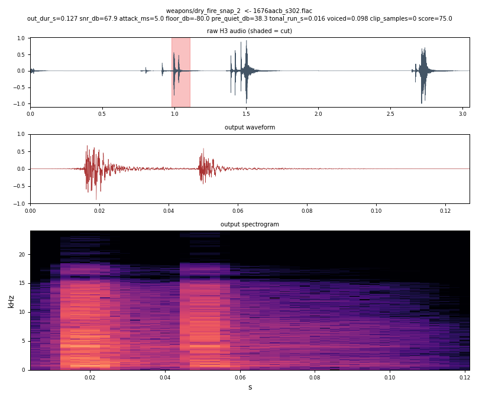
#2 dry_fire_2 · round 1 (h3_test)picked
round 1 prompt (tools/comfy_audio.py preset)
score 68.1 · 0.173 s · loud -26.2 dB · attack 3.0 ms · centroid 4913 Hz · low 0 % · SNR 67.2 dB
waveform
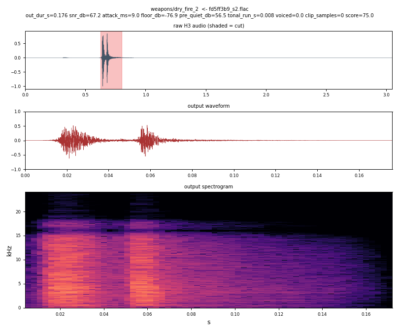
#3 dry_fire_clack_2 · round 2
hard loud dry steel clack of a falling hammer
score 65.2 · 0.085 s · loud -29.7 dB · attack 3.0 ms · centroid 6569 Hz · low 1 % · SNR 85.8 dB
waveform
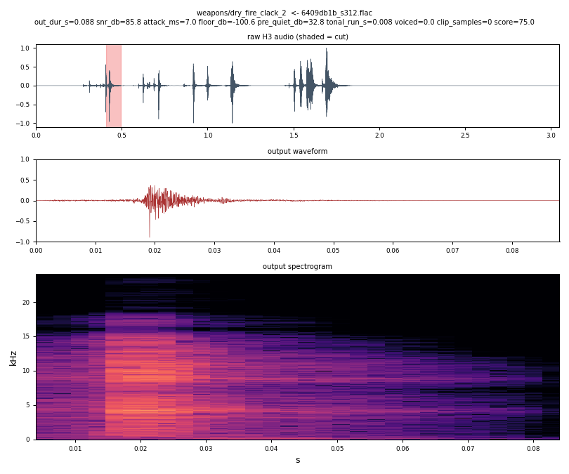
#4 dry_fire_clack_1 · round 2
hard loud dry steel clack of a falling hammer
score 64.3 · 0.184 s · loud -29.3 dB · attack 2.0 ms · centroid 7601 Hz · low 0 % · SNR 65.0 dB
waveform
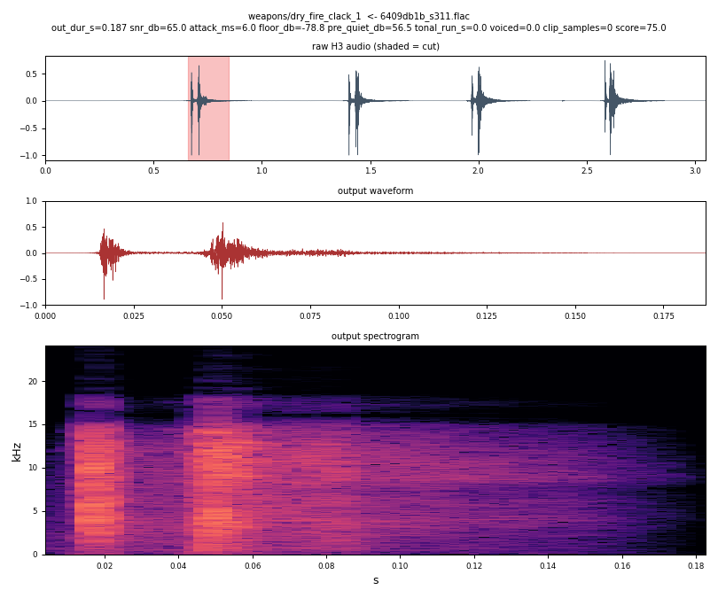
#5 dry_fire_snap_3 · round 2
hammer snapping on an empty chamber, loud sharp crisp click
score 62.9 · 0.157 s · loud -25.3 dB · attack 4.5 ms · centroid 5686 Hz · low 1 % · SNR 70.9 dB
waveform
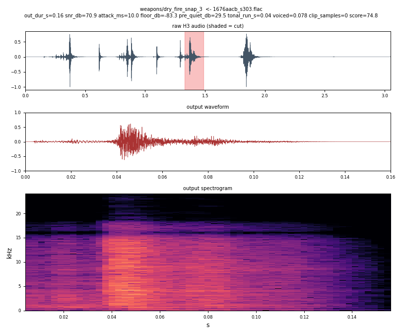
#6 dry_fire_3 · round 1 (h3_test)
round 1 prompt (tools/comfy_audio.py preset)
score 61.6 · 0.229 s · loud -28.1 dB · attack 4.0 ms · centroid 5273 Hz · low 5 % · SNR 64.6 dB
waveform
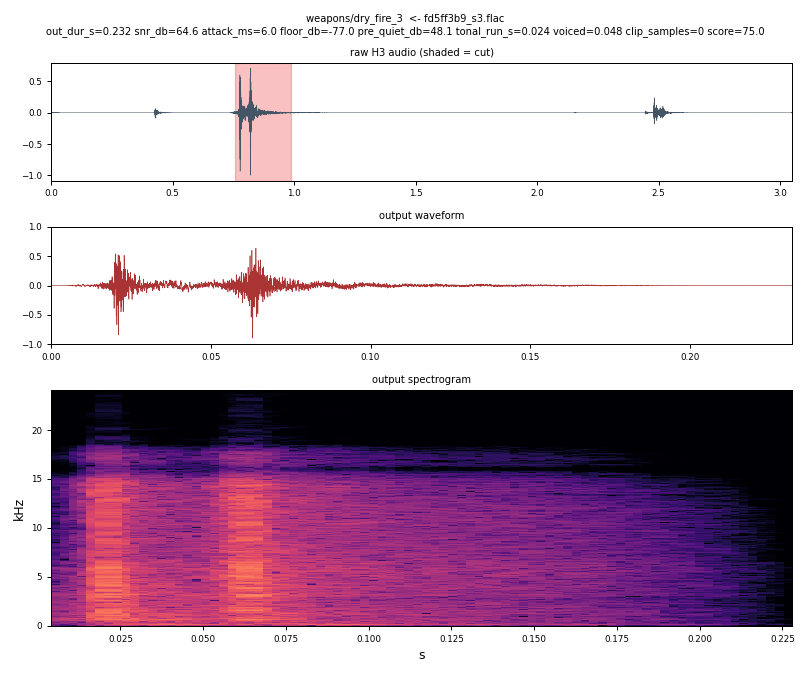
#7 dry_fire_1 · round 1 (h3_test)
round 1 prompt (tools/comfy_audio.py preset)
score 54.0 · 0.164 s · loud -26.8 dB · attack 4.5 ms · centroid 1065 Hz · low 6 % · SNR 67.8 dB
waveform
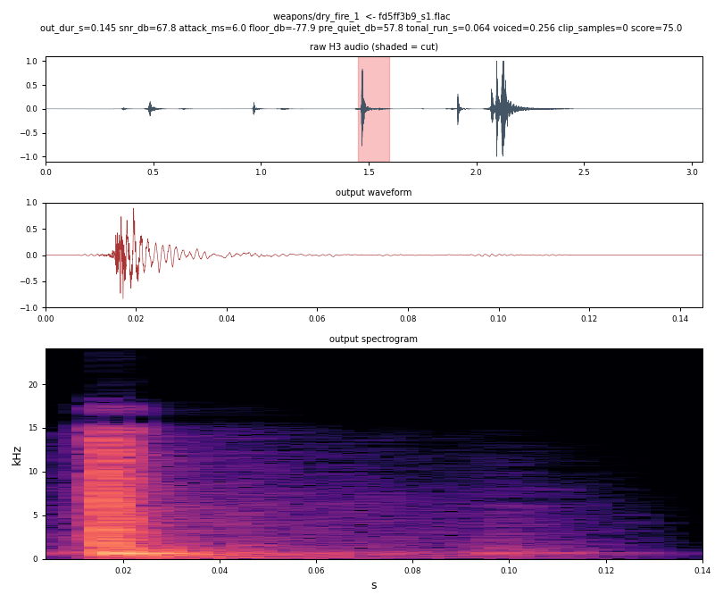
#8 dry_fire_snap_1 · round 2soft attack
hammer snapping on an empty chamber, loud sharp crisp click
score 75.0 · 0.161 s · loud -25.6 dB · attack 8.0 ms · centroid 2628 Hz · low 0 % · SNR 64.6 dB
waveform
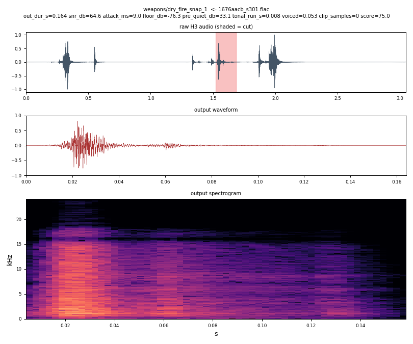
#9 dry_fire_clack_3 · round 2too long for a click
hard loud dry steel clack of a falling hammer
score 75.0 · 0.311 s · loud -31.3 dB · attack 1.5 ms · centroid 2676 Hz · low 1 % · SNR 107.2 dB
waveform
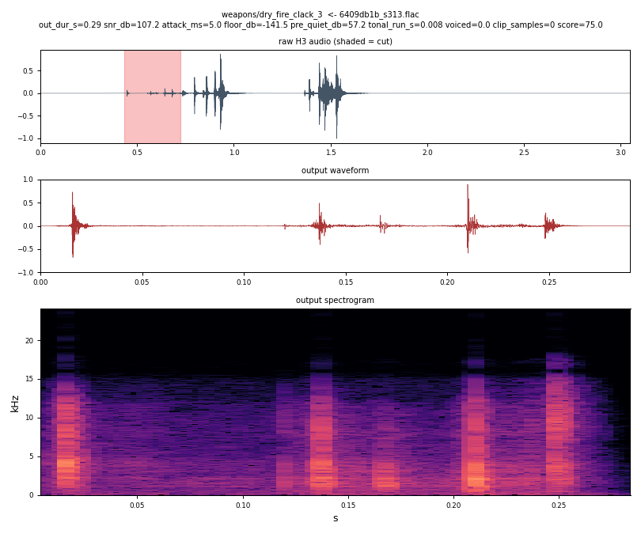
#10 dry_fire_snap_4 · round 2soft attack
hammer snapping on an empty chamber, loud sharp crisp click
score 70.0 · 0.145 s · loud -27.6 dB · attack 23.5 ms · centroid 6562 Hz · low 0 % · SNR 64.2 dB
waveform
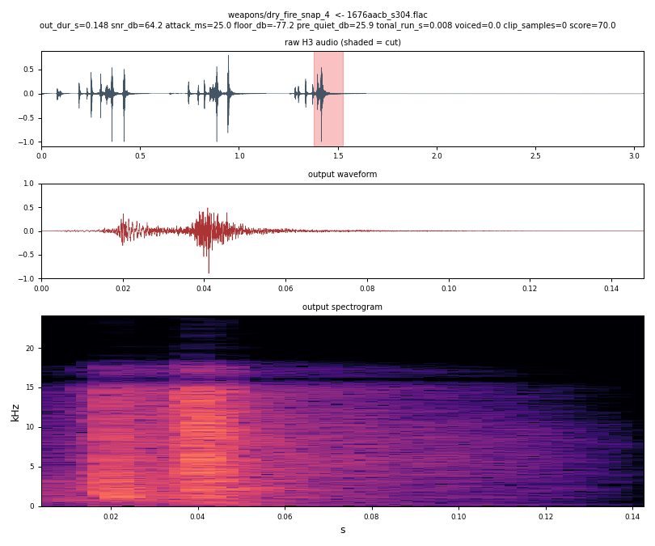
#11 dry_fire_clack_4 · round 2soft attack
hard loud dry steel clack of a falling hammer
score 67.5 · 0.182 s · loud -29.5 dB · attack 8.5 ms · centroid 8391 Hz · low 0 % · SNR 52.5 dB
waveform
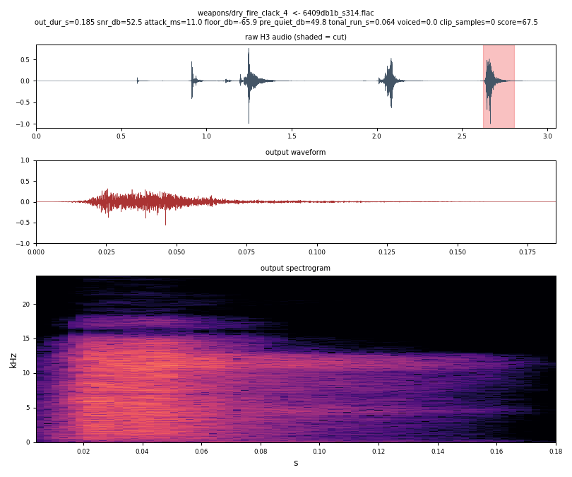
Footsteps: concrete / paving
The three variations come from one prompt (one take) so they sound alike.
In the game nowgame/assets/audio/movement/step_concrete_<n>.ogg · volume 0.3
step_concrete_1.ogg
waveform
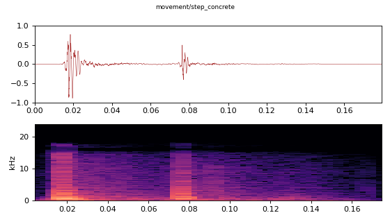
step_concrete_2.ogg
waveform
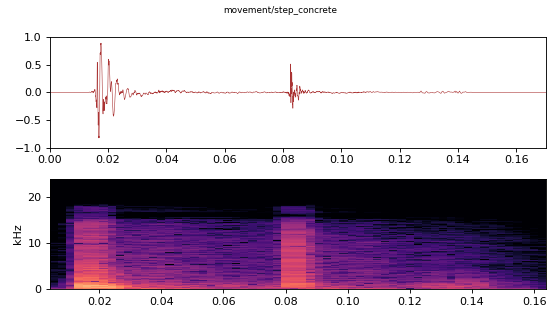
step_concrete_3.ogg
waveform
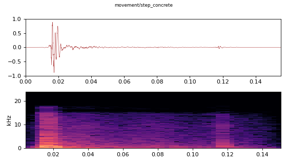
old placeholder: step_concrete_1.ogg
old placeholder: step_concrete_2.ogg
old placeholder: step_concrete_3.ogg
#1 step_concrete_3 · round 1 (h3_test)picked
round 1 prompt (tools/comfy_audio.py preset)
score 81.8 · 0.179 s · loud -26.1 dB · attack 2.5 ms · centroid 881 Hz · low 3 % · SNR 62.1 dB
waveform
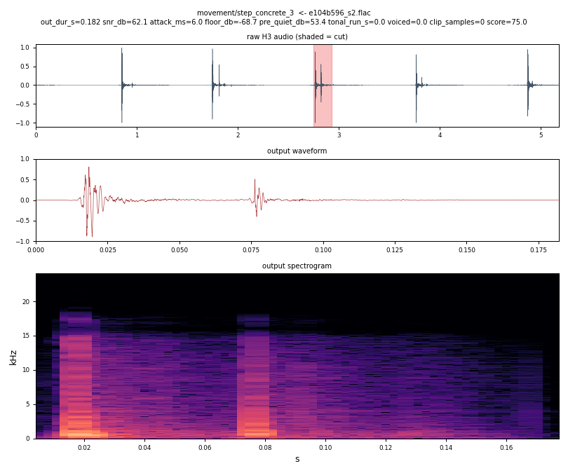
#2 step_concrete_2 · round 1 (h3_test)picked
round 1 prompt (tools/comfy_audio.py preset)
score 74.7 · 0.17 s · loud -26.7 dB · attack 2.0 ms · centroid 1866 Hz · low 4 % · SNR 62.0 dB
waveform
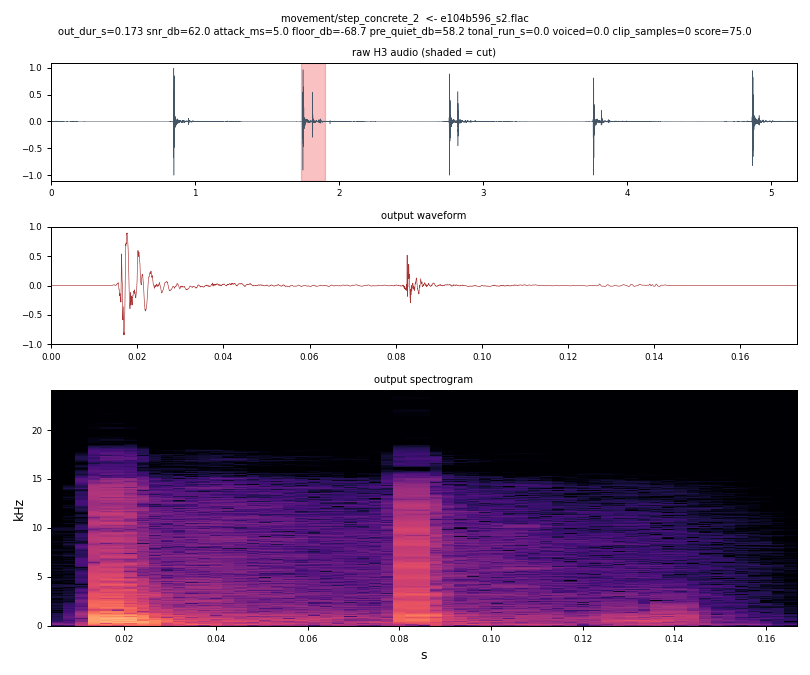
#3 step_concrete_1 · round 1 (h3_test)picked
round 1 prompt (tools/comfy_audio.py preset)
score 72.6 · 0.155 s · loud -26.6 dB · attack 2.0 ms · centroid 607 Hz · low 13 % · SNR 62.8 dB
waveform
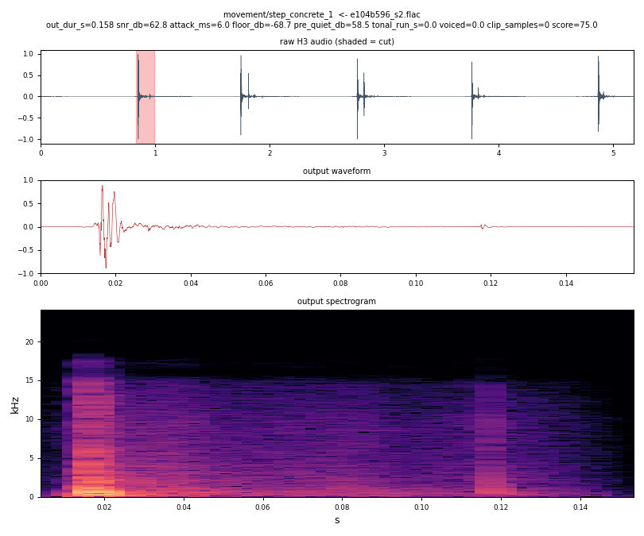
#4 step_concrete_jog_1 · round 2
boots jogging on concrete, crisp heel slap + gritty scuff
score 68.2 · 0.164 s · loud -31.5 dB · attack 1.5 ms · centroid 1083 Hz · low 49 % · SNR 45.6 dB
waveform
#5 step_concrete_jog_5 · round 2
boots jogging on concrete, crisp heel slap + gritty scuff
score 65.2 · 0.216 s · loud -31.6 dB · attack 2.0 ms · centroid 891 Hz · low 51 % · SNR 44.8 dB
waveform
#6 step_concrete_jog_6 · round 2
boots jogging on concrete, crisp heel slap + gritty scuff
score 61.7 · 0.332 s · loud -31.5 dB · attack 2.5 ms · centroid 649 Hz · low 59 % · SNR 44.3 dB
waveform
#7 step_concrete_jog_4 · round 2
boots jogging on concrete, crisp heel slap + gritty scuff
score 61.5 · 0.368 s · loud -31.5 dB · attack 7.0 ms · centroid 765 Hz · low 3 % · SNR 45.1 dB
waveform
#8 step_concrete_jog_3 · round 2
boots jogging on concrete, crisp heel slap + gritty scuff
score 61.3 · 0.146 s · loud -31.6 dB · attack 1.0 ms · centroid 608 Hz · low 75 % · SNR 45.2 dB
waveform
#9 step_concrete_jog_2 · round 2
boots jogging on concrete, crisp heel slap + gritty scuff
score 58.1 · 0.342 s · loud -33.7 dB · attack 2.0 ms · centroid 459 Hz · low 83 % · SNR 45.2 dB
waveform
#10 step_concrete_heavy_1 · round 2too dull or thin for concrete
heavy boots striding on stone paving, solid thud + gritty tap
score 75.0 · 0.324 s · loud -21.8 dB · attack 4.5 ms · centroid 333 Hz · low 54 % · SNR 69.2 dB
waveform
#11 step_concrete_heavy_2 · round 2too dull or thin for concrete
heavy boots striding on stone paving, solid thud + gritty tap
score 75.0 · 0.361 s · loud -23.8 dB · attack 3.0 ms · centroid 113 Hz · low 95 % · SNR 79.0 dB
waveform
#12 step_concrete_heavy_3 · round 2too dull or thin for concrete
heavy boots striding on stone paving, solid thud + gritty tap
score 75.0 · 0.325 s · loud -21.8 dB · attack 7.0 ms · centroid 140 Hz · low 93 % · SNR 81.4 dB
waveform
#13 step_concrete_heavy_4 · round 2too dull or thin for concrete
heavy boots striding on stone paving, solid thud + gritty tap
score 75.0 · 0.331 s · loud -23.0 dB · attack 5.5 ms · centroid 316 Hz · low 78 % · SNR 80.0 dB
waveform
#14 step_concrete_heavy_5 · round 2too dull or thin for concrete
heavy boots striding on stone paving, solid thud + gritty tap
score 75.0 · 0.334 s · loud -22.6 dB · attack 6.5 ms · centroid 193 Hz · low 88 % · SNR 81.2 dB
waveform
#15 step_concrete_heavy_6 · round 2too dull or thin for concrete
heavy boots striding on stone paving, solid thud + gritty tap
score 75.0 · 0.342 s · loud -22.5 dB · attack 8.0 ms · centroid 131 Hz · low 93 % · SNR 80.9 dB
waveform
Footsteps: gravel
The three variations come from one prompt so they sound alike.
In the game nowgame/assets/audio/movement/step_gravel_<n>.ogg · volume 0.33
step_gravel_1.ogg
waveform
step_gravel_2.ogg
waveform
step_gravel_3.ogg
waveform
old placeholder: step_gravel_1.ogg
old placeholder: step_gravel_2.ogg
old placeholder: step_gravel_3.ogg
#1 step_gravel_heavy_2 · round 2picked
heavy boots stepping into deep pebbles, sharp crunch
score 77.0 · 0.487 s · loud -27.2 dB · attack 8.5 ms · centroid 2624 Hz · low 2 % · SNR 53.4 dB
waveform
#2 step_gravel_heavy_1 · round 2picked
heavy boots stepping into deep pebbles, sharp crunch
score 75.4 · 0.487 s · loud -29.3 dB · attack 4.5 ms · centroid 2326 Hz · low 3 % · SNR 53.7 dB
waveform
#3 step_gravel_heavy_4 · round 2picked
heavy boots stepping into deep pebbles, sharp crunch
score 74.5 · 0.487 s · loud -27.2 dB · attack 3.0 ms · centroid 2348 Hz · low 3 % · SNR 52.2 dB
waveform
#4 step_gravel_heavy_3 · round 2
heavy boots stepping into deep pebbles, sharp crunch
score 73.3 · 0.356 s · loud -27.3 dB · attack 14.5 ms · centroid 2606 Hz · low 5 % · SNR 52.8 dB
waveform
#5 step_gravel_heavy_5 · round 2
heavy boots stepping into deep pebbles, sharp crunch
score 72.0 · 0.426 s · loud -27.1 dB · attack 6.0 ms · centroid 1822 Hz · low 13 % · SNR 51.0 dB
waveform
#6 step_gravel_heavy_6 · round 2
heavy boots stepping into deep pebbles, sharp crunch
score 70.6 · 0.487 s · loud -27.2 dB · attack 6.0 ms · centroid 1886 Hz · low 10 % · SNR 49.4 dB
waveform
#7 step_gravel_1 · round 1 (h3_test)
round 1 prompt (tools/comfy_audio.py preset)
score 55.6 · 0.487 s · loud -35.8 dB · attack 5.0 ms · centroid 2586 Hz · low 1 % · SNR 34.2 dB
waveform
#8 step_gravel_2 · round 1 (h3_test)
round 1 prompt (tools/comfy_audio.py preset)
score 48.8 · 0.285 s · loud -37.7 dB · attack 1.5 ms · centroid 1805 Hz · low 60 % · SNR 32.9 dB
waveform
#9 step_gravel_3 · round 1 (h3_test)
round 1 prompt (tools/comfy_audio.py preset)
score 26.0 · 0.377 s · loud -35.8 dB · attack 49.0 ms · centroid 2800 Hz · low 0 % · SNR 35.1 dB
waveform
#10 step_gravel_jog_1 · round 2no crunch (dull)
boots jogging on loose gravel, loud dry crunch
score 56.0 · 0.323 s · loud -31.6 dB · attack 2.5 ms · centroid 981 Hz · low 36 % · SNR 41.0 dB
waveform
#11 step_gravel_jog_2 · round 2no crunch (dull)
boots jogging on loose gravel, loud dry crunch
score 55.8 · 0.171 s · loud -29.7 dB · attack 4.0 ms · centroid 1185 Hz · low 26 % · SNR 41.1 dB
waveform
#12 step_gravel_jog_3 · round 2no crunch (dull)
boots jogging on loose gravel, loud dry crunch
score 55.8 · 0.312 s · loud -29.7 dB · attack 7.5 ms · centroid 666 Hz · low 64 % · SNR 41.7 dB
waveform
#13 step_gravel_jog_4 · round 2no crunch (dull)
boots jogging on loose gravel, loud dry crunch
score 55.6 · 0.308 s · loud -29.7 dB · attack 8.5 ms · centroid 731 Hz · low 39 % · SNR 40.6 dB
waveform
#14 step_gravel_jog_5 · round 2no crunch (dull)
boots jogging on loose gravel, loud dry crunch
score 54.3 · 0.296 s · loud -29.8 dB · attack 10.5 ms · centroid 784 Hz · low 44 % · SNR 40.2 dB
waveform
#15 step_gravel_jog_6 · round 2no crunch (dull)
boots jogging on loose gravel, loud dry crunch
score 53.9 · 0.309 s · loud -31.4 dB · attack 2.0 ms · centroid 750 Hz · low 50 % · SNR 38.9 dB
waveform
Footsteps: wood
The three variations come from one prompt so they sound alike.
In the game nowgame/assets/audio/movement/step_wood_<n>.ogg · volume 0.17
step_wood_1.ogg
waveform
step_wood_2.ogg
waveform
step_wood_3.ogg
waveform
old placeholder: step_wood_1.ogg
old placeholder: step_wood_2.ogg
old placeholder: step_wood_3.ogg
#1 step_wood_jog_6 · round 2picked
boots jogging on a hollow wooden deck, hollow thump + faint creak
score 75.0 · 0.283 s · loud -19.1 dB · attack 7.0 ms · centroid 400 Hz · low 68 % · SNR 67.4 dB
waveform
#2 step_wood_3 · round 1 (h3_test)
round 1 prompt (tools/comfy_audio.py preset)
score 74.2 · 0.424 s · loud -26.6 dB · attack 5.0 ms · centroid 423 Hz · low 24 % · SNR 92.6 dB
waveform
#3 step_wood_jog_4 · round 2picked
boots jogging on a hollow wooden deck, hollow thump + faint creak
score 73.7 · 0.252 s · loud -19.5 dB · attack 6.5 ms · centroid 365 Hz · low 69 % · SNR 67.3 dB
waveform
#4 step_wood_jog_5 · round 2picked
boots jogging on a hollow wooden deck, hollow thump + faint creak
score 73.1 · 0.26 s · loud -18.7 dB · attack 6.5 ms · centroid 455 Hz · low 51 % · SNR 69.1 dB
waveform
#5 step_wood_jog_2 · round 2
boots jogging on a hollow wooden deck, hollow thump + faint creak
score 70.7 · 0.175 s · loud -18.7 dB · attack 3.0 ms · centroid 296 Hz · low 62 % · SNR 64.6 dB
waveform
#6 step_wood_jog_3 · round 2
boots jogging on a hollow wooden deck, hollow thump + faint creak
score 69.9 · 0.255 s · loud -19.9 dB · attack 7.0 ms · centroid 281 Hz · low 74 % · SNR 67.7 dB
waveform
#7 step_wood_jog_1 · round 2
boots jogging on a hollow wooden deck, hollow thump + faint creak
score 69.5 · 0.177 s · loud -17.8 dB · attack 6.0 ms · centroid 274 Hz · low 67 % · SNR 64.7 dB
waveform
#8 step_wood_floor_1 · round 2
boots walking firmly on old floorboards, resonant knock
score 60.9 · 0.379 s · loud -20.7 dB · attack 4.5 ms · centroid 151 Hz · low 92 % · SNR 66.0 dB
waveform
#9 step_wood_floor_3 · round 2
boots walking firmly on old floorboards, resonant knock
score 59.1 · 0.409 s · loud -20.7 dB · attack 6.5 ms · centroid 133 Hz · low 90 % · SNR 72.0 dB
waveform
#10 step_wood_floor_4 · round 2
boots walking firmly on old floorboards, resonant knock
score 58.0 · 0.343 s · loud -19.6 dB · attack 5.0 ms · centroid 123 Hz · low 85 % · SNR 72.2 dB
waveform
#11 step_wood_floor_2 · round 2
boots walking firmly on old floorboards, resonant knock
score 57.7 · 0.367 s · loud -19.9 dB · attack 11.5 ms · centroid 127 Hz · low 97 % · SNR 62.9 dB
waveform
#12 step_wood_floor_6 · round 2
boots walking firmly on old floorboards, resonant knock
score 57.4 · 0.374 s · loud -20.8 dB · attack 4.0 ms · centroid 118 Hz · low 86 % · SNR 72.1 dB
waveform
#13 step_wood_floor_5 · round 2
boots walking firmly on old floorboards, resonant knock
score 57.3 · 0.215 s · loud -21.7 dB · attack 4.0 ms · centroid 117 Hz · low 90 % · SNR 64.2 dB
waveform
#14 step_wood_1 · round 1 (h3_test)
round 1 prompt (tools/comfy_audio.py preset)
score 52.5 · 0.369 s · loud -24.6 dB · attack 8.0 ms · centroid 84 Hz · low 99 % · SNR 72.3 dB
waveform
#15 step_wood_2 · round 1 (h3_test)
round 1 prompt (tools/comfy_audio.py preset)
score 52.0 · 0.388 s · loud -24.6 dB · attack 7.0 ms · centroid 81 Hz · low 99 % · SNR 72.1 dB
waveform
Landing
In the game nowgame/assets/audio/movement/land_<n>.ogg · volume 0.26
land_1.ogg
waveform
land_2.ogg
waveform
land_3.ogg
waveform
old placeholder: land.ogg
#1 land_thud_2 · round 2picked
drops from a ledge, deep body-weight thud, clink of gear
score 95.9 · 0.214 s · loud -21.5 dB · attack 10.0 ms · centroid 254 Hz · low 69 % · SNR 96.1 dB
waveform
#2 land_hard_2 · round 2picked
jumps down from a wall, both boots on concrete, gear rattle
score 92.4 · 0.492 s · loud -25.8 dB · attack 13.0 ms · centroid 291 Hz · low 75 % · SNR 54.8 dB
waveform
#3 land_thud_1 · round 2picked
drops from a ledge, deep body-weight thud, clink of gear
score 92.0 · 0.381 s · loud -22.4 dB · attack 5.5 ms · centroid 326 Hz · low 56 % · SNR 63.5 dB
waveform
#4 land_1 · round 1 (h3_test)
round 1 prompt (tools/comfy_audio.py preset)
score 88.2 · 0.257 s · loud -24.7 dB · attack 5.5 ms · centroid 718 Hz · low 44 % · SNR 68.9 dB
waveform
#5 land_hard_1 · round 2
jumps down from a wall, both boots on concrete, gear rattle
score 83.6 · 0.736 s · loud -25.8 dB · attack 10.0 ms · centroid 797 Hz · low 40 % · SNR 56.5 dB
waveform
#6 land_thud_3 · round 2
drops from a ledge, deep body-weight thud, clink of gear
score 80.4 · 0.759 s · loud -23.6 dB · attack 28.5 ms · centroid 694 Hz · low 45 % · SNR 62.6 dB
waveform
#7 land_hard_3 · round 2
jumps down from a wall, both boots on concrete, gear rattle
score 65.3 · 0.736 s · loud -27.8 dB · attack 9.5 ms · centroid 941 Hz · low 30 % · SNR 41.4 dB
waveform
#8 land_2 · round 1 (h3_test)
round 1 prompt (tools/comfy_audio.py preset)
score 62.9 · 0.584 s · loud -25.0 dB · attack 4.5 ms · centroid 2371 Hz · low 3 % · SNR 47.0 dB
waveform
#9 land_3 · round 1 (h3_test)
round 1 prompt (tools/comfy_audio.py preset)
score 62.3 · 0.688 s · loud -23.4 dB · attack 12.5 ms · centroid 1824 Hz · low 11 % · SNR 44.5 dB
waveform
#10 land_thud_4 · round 2
drops from a ledge, deep body-weight thud, clink of gear
score 61.4 · 0.19 s · loud -23.2 dB · attack 22.0 ms · centroid 1553 Hz · low 43 % · SNR 38.1 dB
waveform
#11 land_hard_4 · round 2clipped
jumps down from a wall, both boots on concrete, gear rattle
score 51.7 · 0.276 s · loud -25.9 dB · attack 9.0 ms · centroid 395 Hz · low 52 % · SNR 46.7 dB